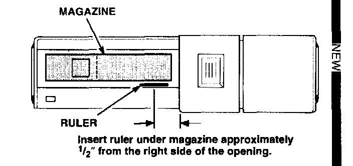

Two-Piece Door Model
1. Remove the changer from the vehicle. [NEW]2. Remove the top cover plate from the changer, and look for a jammed tray. [NEW]

3. If a tray is stuck in the player, reinstall the cover and replace the changer. If all the trays are inside the magazine, insert a thin stainless steel ruler or a "Slim Jim" under the magazine, about 1/2" from the right side of the opening. [NEW]
4. Push the ruler in until it presses against the eject lever at the back of the unit. [NEW]
5. Slowly remove the ruler and magazine at the same time. [NEW]